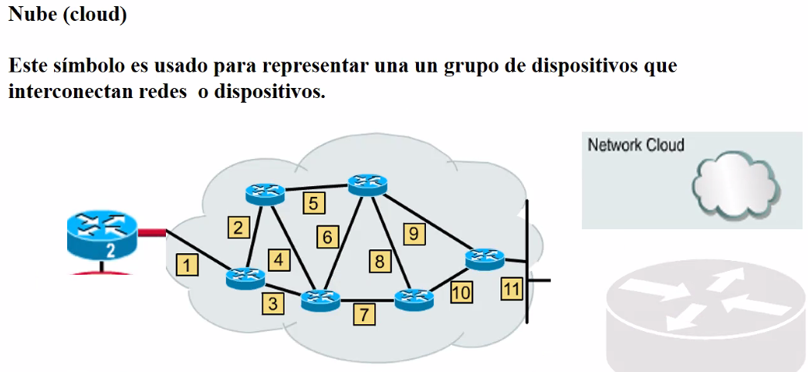

Representa un grupo de elementos.

Puede ser un conjunto de routers,switches, antenas, satelites, ect.
Es una red.
Sirve para simplificar las cosas.

De tu casa te conectas a la red publica. Dentro de la red publica hay una red privada para ti (vpn).

Tu no alojas cosas en la nube. Lo alojas en un nodo de la nube (solo no te importa donde esta).